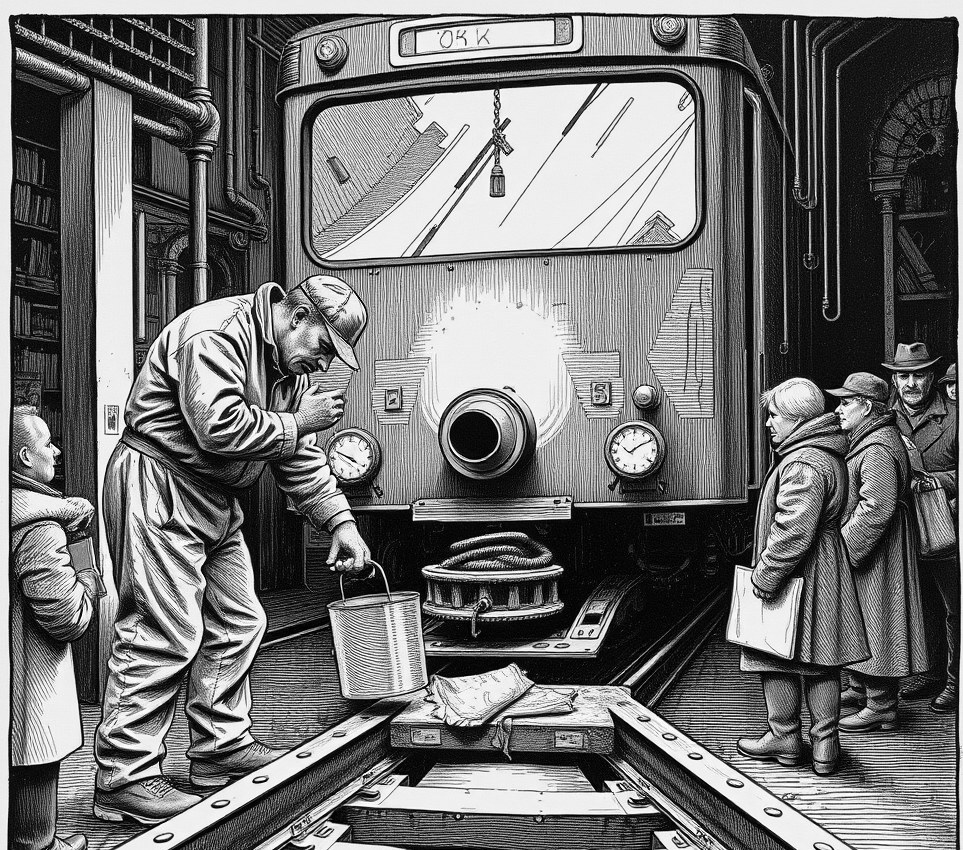

SILT-REACH, CERES . 15 July 3458

Maintenance records from the Ceres Transit Authority reveal that a four-hundred-ton ore tram was legally reclassified as a companion terrier after its chassis snapped.
Directors registered the rail vehicle under asteroid pet rules to bypass mandatory safety inspections.
Commuters who suffered broken limbs in the magnetic chute were recorded in official logs as receiving nips.
Engineer Sunita Patel met reporters in a dark bay near the grinding track.
"We stopped servicing brakes," Patel said.
"Management insisted that routine repair work causes emotional distress," Patel added, holding a metal bucket of grease. "Now we throw synth-fat into the engine intake twice per shift and pray he settles down."
When the tram sheared through a rock bulkhead last month, station managers posted notices warning passengers to refrain from making direct eye contact with the vehicle grill.
Director Tomas Kalu issued a flat denial.
He insisted the iron vehicle was healthy and merely going through a mouthy phase after swallowing two freight containers.
Transit safety officers later classified a derailed ore car as a dropped leash.
Medical staff at the airlock treated eleven miners for crushed legs before discharging them with rubber teething rings.
The tram remains in full service on the main line.
It will not receive maintenance until its scheduled vet check next century.